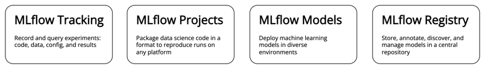

Introducing MLflow
MLflow is an open source platform to manage the ML lifecycle, including experimentation, reproducibility, deployment, and a central model registry.
- It is ML library and language agnostic framework, i.e., it supports all popular ML libraries
- It supports both local and cloud development environments
- It is simple and modular to use - can be simply infused into existing ML code
- It is easy to get started, hence delivers positive developer experience!
MLflow Components
MLflow currently offers four components:

MLflow Models and MLflow Registry are not within the scope of this training.
MLflow Tracking
When you use MLflow model tracking, you can train a variety of different machine learning models then make predictions with them interchangeably using the standardized model prediction interface. You can also register your models in the MLflow model registry and keep track of which model is being used in production so that this information is easily accessible to everyone you are working with.
MLflow Tracking is organized around the concept of runs, which are executions of some piece of data science code. Each run records the following information -
Parameters: Key-value inputs to your codeMetrics: Numeric values (can update over time)Tags and Notes: Additional information about a runArtifacts: Files, data, and modelsSource: Name of the file used to launch the runVersion: The version of the source codeRun: An instance of code that runs by MLflowExperiment: {Run, …,Run}Start & End Time: Start and end time of a run
Runs and Artifacts Store
MLFlow provides wide variety of storage option for logging runs and artifacts.
MLflow Runs
- They can be recorded to local files, to a SQLAlchemy compatible database, or remotely to a tracking server.
- MLflow uses
backend storecomponent for storingruns - Backend store persists MLflow entities (runs, parameters, metrics, tags, notes, metadata, etc.)
- Backend store options:
- A file store backend - local file path
- A database-backed store -
mysql,mssql,sqlite, orpostgresql - HTTP server (specified as
https://my-server:5000), which is a server hosting an MLflow tracking server.
By default, the MLflow Python API logs runs locally to files in an mlruns directory wherever you ran your program. You can then run mlflow ui to see the logged runs.
MLflow Artifacts
- They can be persisted to local files and a variety of remote file storage solutions.
- MLflow uses
artifact storecomponent for storingartifacts - Artifact store persists artifacts (files, models, images, in-memory objects, or model summary, etc.)
- Artifact store options:
- Local file path
- Amazon S3
- Azure Blob Storage
- Google Cloud Storage
- SFTP Server
- NFS